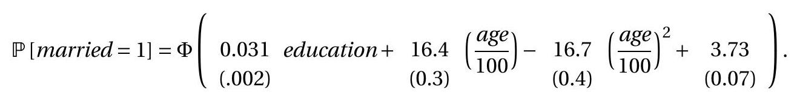
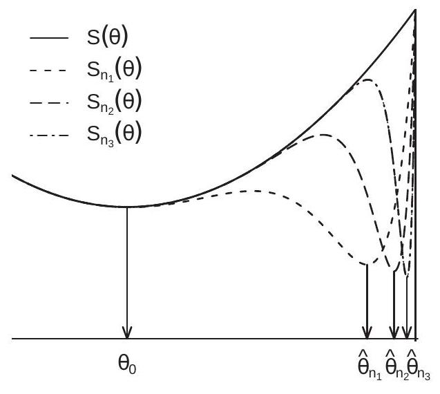
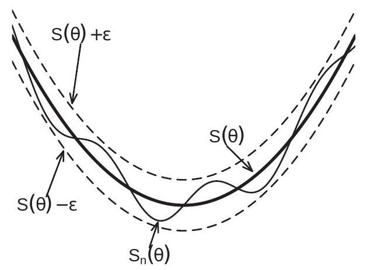
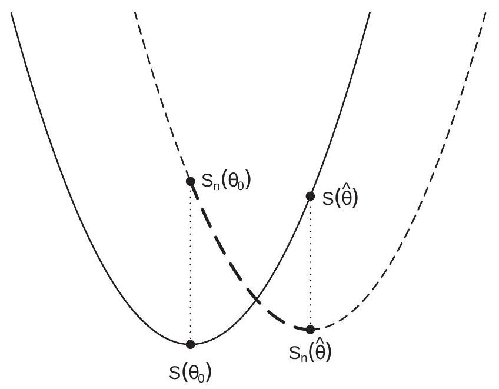

21 M-Estimators
21.1 Introduction
So far in this textbook we have primarily focused on estimators which have explicit algebraic expressions. However, many econometric estimators need to be calculated by numerical methods. These estimators are collectively described as nonlinear. Many fall in a broad class known as m-estimators. In this part of the textbook we describe a number of m-estimators in wide use in econometrics. They have a common structure which allows for a unified treatment of estimation and inference.
An m-estimator is defined as a minimizer of a sample average
\[ \begin{gathered} \widehat{\theta}=\underset{\theta \in \Theta}{\operatorname{argmin}} S_{n}(\theta) \\ S_{n}(\theta)=\frac{1}{n} \sum_{i=1}^{n} \rho\left(Y_{i}, X_{i}, \theta\right) \end{gathered} \]
where \(\rho(Y, X, \theta)\) is some function of \((Y, X)\) and a parameter \(\theta \in \Theta\). The function \(S_{n}(\theta)\) is called the criterion function or objective function. For notational simplicity set \(\rho_{i}(\theta)=\rho\left(Y_{i}, X_{i}, \theta\right)\).
This includes maximum likelihood when \(\rho_{i}(\theta)\) is the negative log-density function. “m-estimators” are a broader class; the prefix “m” stands for “maximum likelihood-type”.
The issues we focus on in this chaper are: (1) identification; (2) estimation; (3) consistency; (4) asymptotic distribution; and (5) covariance matrix estimation.
21.2 Examples
There are many m-estimators in common econometric usage. Some examples include the following.
Ordinary Least Squares: \(\rho_{i}(\theta)=\left(Y_{i}-X_{i}^{\prime} \theta\right)^{2}\).
Nonlinear Least Squares: \(\rho_{i}(\theta)=\left(Y_{i}-m\left(X_{i}, \theta\right)\right)^{2}\) (Chapter 23).
Least Absolute Deviations: \(\rho_{i}(\theta)=\left|Y_{i}-X_{i}^{\prime} \theta\right|\) (Chapter 24).
Quantile Regression: \(\rho_{i}(\theta)=\left(Y_{i}-X_{i}^{\prime} \theta\right)\left(\tau-\mathbb{1}\left\{\left(Y_{i}-X_{i}^{\prime} \theta\right)<0\right\}\right)\) (Chapter 24).
Maximum Likelihood: \(\rho_{i}(\theta)=-\log f\left(Y_{i} \mid X_{i}, \theta\right)\). The final category - Maximum Likelihood Estimation - includes many estimators as special cases. This includes many standard estimators of limited-dependent-variable models (Chapters 25-27). To illustrate, the probit model for a binary dependent variable is
\[ \mathbb{P}[Y=1 \mid X]=\Phi\left(X^{\prime} \theta\right) \]
where \(\Phi(u)\) is the normal cumulative distribution function. We will study probit estimation in detail in Chapter 25. The negative log-density function is
\[ \rho_{i}(\theta)=-Y_{i} \log \left(\Phi\left(X_{i}^{\prime} \theta\right)\right)-\left(1-Y_{i}\right) \log \left(1-\Phi\left(X_{i}^{\prime} \theta\right)\right) . \]
Not all nonlinear estimators are m-estimators. Examples include method of moments, GMM, and minimum distance.
21.3 Identification and Estimation
A parameter vector \(\theta\) is identified if it is uniquely determined by the probability distribution of the observations. This is a property of the probability distribution, not of the estimator.
However, when discussing a specific estimator it is common to describe identification in terms of the criterion function. Assume \(\mathbb{E}|\rho(Y, X, \theta)|<\infty\). Define
\[ S(\theta)=\mathbb{E}\left[S_{n}(\theta)\right]=\mathbb{E}[\rho(Y, X, \theta)] \]
and its population minimizer
\[ \theta_{0}=\underset{\theta \in \Theta}{\operatorname{argmin}} S(\theta) . \]
We say that \(\theta\) is identified (or point identified) by \(S(\theta)\) if the minimizer \(\theta_{0}\) is unique.
In nonlinear models it is difficult to provide general conditions under which a parameter is identified. Identification needs to be examined on a model-by-model basis.
An m-estimator \(\widehat{\theta}\) by definition minimizes \(S_{n}(\theta)\). When there is no explicit algebraic expression for the solution the minimization is done numerically. Such numerical methods are reviewed in Chapter 12 of Probability and Statistics for Economists.
We illustrate using the probit model of the previous section. We use the CPS dataset for \(Y\) equal to an indicator that the individual is married \({ }^{1}\), and set the regressors equal to years of education, age, and age squared. We obtain the following estimates

Standard error calculation will be discussed in Section 22.8. In this application we see that the probability of marriage is increasing in years of education and is an increasing yet concave function of age.
21.4 Consistency
It seems reasonable to expect that if a parameter is identified then we should be able to estimate the parameter consistently. For linear estimators we demonstrated consistency by applying the WLLN to the
\({ }^{1}\) We define married \(=1\) if marital equals 1,2 , or 3. explicit algebraic expressions for the estimators. This is not possible for nonlinear estimators because they do not have explicit algebraic expressions.
Instead, what is available to us is that an m-estimator minimizes the criterion function \(S_{n}(\theta)\) which is itself a sample average. For any given \(\theta\) the WLLN shows that \(S_{n}(\theta) \underset{p}{\longrightarrow} S(\theta)\). It is intuitive that the minimizer of \(S_{n}(\theta)\) (the m-estimator \(\widehat{\theta}\) ) will converge in probability to the minimizer of \(S(\theta)\) (the parameter \(\theta_{0}\) ). However, the WLLN by itself is not sufficient to make this extension.

- Non-Uniform Convergence

- Uniform Convergence
Figure 22.1: Non-Uniform vs. Uniform Convergence
To see the problem examine Figure 22.1(a). This displays a sequence of functions \(S_{n}(\theta)\) (the dashed lines) for three values of \(n\). What is illustrated is that for each \(\theta\) the function \(S_{n}(\theta)\) converges towards the limit function \(S(\theta)\). However for each \(n\) the function \(S_{n}(\theta)\) has a severe dip in the right-hand region. The result is that the sample minimizer \(\widehat{\theta}_{n}\) converges to the right-limit of the parameter space. In contrast, the minimizer \(\theta_{0}\) of the limit criterion \(S(\theta)\) is in the interior of the parameter space. What we observe is that \(S_{n}(\theta)\) converges to \(S(\theta)\) for each \(\theta\) but the minimizer \(\widehat{\theta}_{n}\) does not converge to \(\theta_{0}\).
A sufficient condition to exclude this pathological behavior is uniform convergence- uniformity over the parameter space \(\Theta\). As we show in Theorem 22.1, uniform convergence in probability of \(S_{n}(\theta)\) to \(S(\theta)\) is sufficient to establish that the m-estimator \(\widehat{\theta}\) is consistent for \(\theta_{0}\).
Definition 22.1 \(S_{n}(\theta)\) converges in probability to \(S(\theta)\) uniformly over \(\theta \in \Theta\) if
\[ \sup _{\theta \in \Theta}\left|S_{n}(\theta)-S(\theta)\right| \underset{p}{\longrightarrow} 0 \]
as \(n \rightarrow \infty\)
Uniform convergence excludes erratic wiggles in \(S_{n}(\theta)\) uniformly across \(\theta\) and \(n\) (e.g., what occurs in Figure 22.1(a)). The idea is illustrated in Figure 22.1(b). The heavy solid line is the function \(S(\theta)\). The dashed lines are \(S(\theta)+\varepsilon\) and \(S(\theta)-\varepsilon\). The thin solid line is the sample criterion \(S_{n}(\theta)\). The figure illustrates a situation where the sample criterion satisifes \(\sup _{\theta \in \Theta}\left|S_{n}(\theta)-S(\theta)\right|<\varepsilon\). The sample criterion as displayed weaves up and down but stays within \(\varepsilon\) of \(S(\theta)\). Uniform convergence holds if the event shown in Figure 22.1(b) holds with high probability for \(n\) sufficiently large, for any arbitrarily small \(\varepsilon\).
Theorem \(22.1 \hat{\theta} \underset{p}{\longrightarrow} \theta_{0}\) as \(n \rightarrow \infty\) if
\(S_{n}(\theta)\) converges in probability to \(S(\theta)\) uniformly over \(\theta \in \Theta\).
\(\theta_{0}\) uniquely minimizes \(S(\theta)\) in the sense that for all \(\epsilon>0\),
\[ \inf _{\theta:\left\|\theta-\theta_{0}\right\| \geq \epsilon} S(\theta)>S\left(\theta_{0}\right) . \]
Theorem \(22.1\) shows that an m-estimator is consistent for its population parameter. There are only two conditions. First, the criterion function converges uniformly in probability to its expected value, and second, the minimizer \(\theta_{0}\) is unique. The assumption excludes the possibility that \(\lim _{j} S\left(\theta_{j}\right)=S\left(\theta_{0}\right.\) ) for some sequence \(\theta_{j} \in \Theta\) not converging to \(\theta_{0}\).
The proof of Theorem \(22.1\) is provided in Section 22.9.
21.5 Uniform Law of Large Numbers
The uniform convergence of Definition \(22.1\) is a high-level assumption. In this section we provide lower level sufficient conditions.
Theorem 22.2 Uniform Law of Large Numbers (ULLN) Assume
\(\left(Y_{i}, X_{i}\right)\) are i.i.d.
\(\rho(Y, X, \theta)\) is continuous in \(\theta \in \Theta\) with probability one.
\(|\rho(Y, X, \theta)| \leq G(Y, X)\) where \(\mathbb{E}[G(Y, X)]<\infty\).
\(\Theta\) is compact.
Then \(\sup _{\theta \in \Theta}\left|S_{n}(\theta)-S(\theta)\right| \underset{p}{\longrightarrow} 0\)
Theorem \(22.2\) is established in Theorem \(18.2\) of Probability and Statistics for Economists.
Assumption 2 holds if \(\rho(y, x, \theta)\) is continuous in \(\theta\), or if the discontinuities occur at points of zero probability. This allows for most relevant applications in econometrics. Theorem \(18.2\) of Probability and Statistics for Economists also provides conditions based on finite bracketing or covering numbers which allow for more generality. Assumption 3 is a slight strengthening of the finite-expectation condition \(\mathbb{E}[\rho(Y, X, \theta)]<\infty\). The function \(G(Y, X)\) is called an envelope. The ULLN extends to time series and clustered samples. See B. E. Hansen and S. Lee (2019) for clustered samples.
Combining Theorems \(22.1\) and \(22.2\) we obtain a set of conditions for consistent estimation.
Theorem \(22.3 \hat{\theta} \underset{p}{\longrightarrow} \theta_{0}\) as \(n \rightarrow \infty\) if
\(\left(Y_{i}, X_{i}\right)\) are i.i.d.
\(\rho(Y, X, \theta)\) is continuous in \(\theta \in \Theta\) with probability one.
\(|\rho(Y, X, \theta)| \leq G(Y, X)\) where \(\mathbb{E}[G(Y, X)]<\infty\).
\(\Theta\) is compact.
\(\theta_{0}\) uniquely minimizes \(S(\theta)\).
21.6 Asymptotic Distribution
We now establish an asymptotic distribution theory. We start by an informal demonstration, present a general result under high-level conditions, and then discuss the assumptions and conditions. Define
\[ \begin{aligned} \psi(Y, X, \theta) &=\frac{\partial}{\partial \theta} \rho(Y, X, \theta) \\ \bar{\psi}_{n}(\theta) &=\frac{\partial}{\partial \theta} S_{n}(\theta) \\ \psi(\theta) &=\frac{\partial}{\partial \theta} S(\theta) . \end{aligned} \]
Also define \(\psi_{i}(\theta)=\psi\left(Y_{i}, X_{i}, \theta\right)\) and \(\psi_{i}=\psi_{i}\left(\theta_{0}\right)\).
Since the m-estimator \(\widehat{\theta}\) minimizes \(S_{n}(\theta)\) it satisfies \({ }^{2}\) the first-order condition \(0=\bar{\psi}_{n}(\widehat{\theta})\). Expand the right-hand side as a first order Taylor expansion about \(\theta_{0}\). This is valid when \(\widehat{\theta}\) is in a neighborhood of \(\theta_{0}\), which holds for \(n\) sufficiently large by Theorem 22.1. This yields
\[ 0=\bar{\psi}_{n}(\widehat{\theta}) \simeq \bar{\psi}_{n}\left(\theta_{0}\right)+\frac{\partial^{2}}{\partial \theta \partial \theta^{\prime}} S_{n}\left(\theta_{0}\right)\left(\widehat{\theta}-\theta_{0}\right) . \]
Rewriting, we obtain
\[ \sqrt{n}\left(\widehat{\theta}-\theta_{0}\right) \simeq-\left(\frac{\partial^{2}}{\partial \theta \partial \theta^{\prime}} S_{n}\left(\theta_{0}\right)\right)^{-1}\left(\sqrt{n} \bar{\psi}_{n}\left(\theta_{0}\right)\right) . \]
Consider the two components. First, by the WLLN
\[ \frac{\partial^{2}}{\partial \theta \partial \theta^{\prime}} S_{n}\left(\theta_{0}\right)=\frac{1}{n} \sum_{i=1}^{n} \frac{\partial^{2}}{\partial \theta \partial \theta^{\prime}} \rho\left(Y_{i}, X_{i}, \theta_{0}\right) \underset{p}{\longrightarrow} \mathbb{E}\left[\frac{\partial^{2}}{\partial \theta \partial \theta^{\prime}} \rho_{i}\left(Y, X, \theta_{0}\right)\right] \stackrel{\text { def }}{=} \boldsymbol{Q} \]
\({ }^{2}\) If \(\widehat{\theta}\) is an interior solution. Since \(\widehat{\theta}\) is consistent this occurs with probability approaching one if \(\theta_{0}\) is in the interior of the parameter space \(\Theta\). Second,
\[ \sqrt{n} \bar{\psi}_{n}\left(\theta_{0}\right)=\frac{1}{\sqrt{n}} \sum_{i=1}^{n} \psi_{i} . \]
Since \(\theta_{0}\) minimizes \(S(\theta)=\mathbb{E}\left[\rho_{i}(\theta)\right]\) it satisfies the first-order condition
\[ 0=\psi\left(\theta_{0}\right)=\mathbb{E}\left[\psi\left(Y, X, \theta_{0}\right)\right] . \]
Thus the summands in (22.2) are mean zero. Applying a CLT this sum converges in distribution to \(\mathrm{N}(0, \Omega)\) where \(\Omega=\mathbb{E}\left[\psi_{i} \psi_{i}^{\prime}\right]\). We deduce that
\[ \sqrt{n}\left(\widehat{\theta}-\theta_{0}\right) \underset{d}{\longrightarrow} \boldsymbol{Q}^{-1} \mathrm{~N}(0, \Omega)=\mathrm{N}\left(0, \boldsymbol{Q}^{-1} \Omega \boldsymbol{Q}^{-1}\right) . \]
The technical hurdle to make this derivation rigorous is justifying the Taylor expansion (22.1). This can be done through smoothness of the second derivative of \(\rho_{i}\left(\theta_{0}\right)\). An alternative (more advanced) argument based on empirical process theory uses weaker assumptions. Set
\[ \begin{aligned} \boldsymbol{Q}(\theta) &=\frac{\partial^{2}}{\partial \theta \partial \theta^{\prime}} S(\theta) \\ \boldsymbol{Q} &=\boldsymbol{Q}\left(\theta_{0}\right) \end{aligned} \]
Let \(\mathscr{N}\) be some neighborhood of \(\theta_{0}\).
Theorem 22.4 Assume the conditions of Theorem \(22.1\) hold, plus
\(\mathbb{E}\left\|\psi\left(Y, X, \theta_{0}\right)\right\|^{2}<\infty\)
\(Q>0\).
\(\boldsymbol{Q}(\theta)\) is continuous in \(\theta \in \mathscr{N}\).
For all \(\theta_{1}, \theta_{2} \in \mathcal{N},\left\|\psi\left(Y, X, \theta_{1}\right)-\psi\left(Y, X, \theta_{2}\right)\right\| \leq B(Y, X)\left\|\theta_{1}-\theta_{2}\right\|\) where \(\mathbb{E}\left[B(Y, X)^{2}\right]<\infty\)
\(\theta_{0}\) is in the interior of \(\Theta\).
Then as \(n \rightarrow \infty, \sqrt{n}\left(\widehat{\theta}-\theta_{0}\right) \underset{d}{\longrightarrow} \mathrm{N}(0, \boldsymbol{V})\) where \(\boldsymbol{V}=\boldsymbol{Q}^{-1} \Omega \boldsymbol{Q}^{-1}\).
The proof of Theorem \(22.4\) is presented in Section \(22.9\).
In some cases the asymptotic covariance matrix simplifies. The leading case is correctly specified maximum likelihood estimation, where \(\boldsymbol{Q}=\Omega\) so \(\boldsymbol{V}=\boldsymbol{Q}^{-1}=\Omega^{-1}\).
Assumption 1 states that the scores \(\psi\left(Y, X, \theta_{0}\right)\) have a finite second moment. This is necessary in order to apply the CLT. Assumption 2 is a full-rank condition and is related to identification. A sufficient condition for Assumption 3 is that the scores \(\psi(Y, X, \theta)\) are continuously differentiable but this is not necessary. Assumption 3 is broader, allowing for discontinuous \(\psi(Y, X, \theta)\), so long as its expectation is continuous and differentiable. Assumption 4 states that \(\psi(Y, X, \theta)\) is Lipschitz-continuous for \(\theta\) near \(\theta_{0}\). Assumption 5 is required in order to justify the application of the mean-value expansion.
21.7 Asymptotic Distribution Under Broader Conditions*
Assumption 4 in Theorem \(22.4\) requires that \(\psi(Y, X, \theta)\) is Lipschitz-continuous. While this holds in most applications, it is violated in some important applications including quantile regression. In such cases we can appeal to alternative regularity conditions. These are more flexible, but less intuitive.
The following result is a simple generalization of Lipschitz-continuity.
Theorem 22.5 The results of Theorem \(22.4\) hold if Assumption 4 is replaced with the following condition: For all \(\delta>0\) and all \(\theta_{1} \in \mathcal{N}\),
\[ \left(\mathbb{E}\left[\sup _{\left\|\theta-\theta_{1}\right\|<\delta}\left\|\psi(Y, X, \theta)-\psi\left(Y, X, \theta_{1}\right)\right\|^{2}\right]\right)^{1 / 2} \leq C \delta^{\psi} \]
for some \(C<\infty\) and \(0<\psi<\infty\).
See Theorem \(18.5\) of Probability and Statistics for Economists or Theorem 5 of Andrews (1994).
The bound (22.4) holds for many examples with discontinuous \(\psi(Y, X, \theta)\) when the discontinuities occur with zero probability.
We next present a set of flexible results.
Theorem 22.6 The results of Theorem \(22.4\) hold if Assumption 4 is replaced with the following. First, for \(\theta \in \mathcal{N},\|\psi(Y, X, \theta)\| \leq G(Y, X)\) with \(\mathbb{E}\left[G(Y, X)^{2}\right]<\) \(\infty\). Second, one of the following holds.
\(\psi(y, x, \theta)\) is Lipschitz-continuous.
\(\psi(y, x, \theta)=h\left(\theta^{\prime} \psi(x)\right)\) where \(h(u)\) has finite total variation.
\(\psi(y, x, \theta)\) is a combination of functions of the form in parts 1 and 2 obtained by addition, multiplication, minimum, maximum, and composition.
\(\psi(y, x, \theta)\) is a Vapnik-Červonenkis (VC) class.
See Theorem 18.6 of Probability and Statistics for Economists or Theorems 2 and 3 of Andrews (1994).
The function \(h\) in part 2 allows for discontinuous functions, including the indicator and sign functions. Part 3 shows that combinations of smooth (Lipschitz) functions and discontinuous functions satisfying the condition of part 2 are allowed. This covers many relevant applications, including quantile regression. Part 4 states a general condition, that \(\psi(y, x, \theta)\) is a VC class. As we will not be using this property in this textbook we will not discuss this further, but refer the interested reader to any textbook on empirical processes.
Theorems \(22.5\) and \(22.6\) provide alternative conditions on \(\psi(y, x, \theta)\) (other than Lipschitz-continuity) which can be used to establish asymptotic normality of an m-estimator.
21.8 Covariance Matrix Estimation
The standard estimator for \(\boldsymbol{V}\) takes the sandwich form. We estimate \(\Omega\) by
\[ \widehat{\Omega}=\frac{1}{n} \sum_{i=1}^{n} \widehat{\psi}_{i} \widehat{\psi}_{i}^{\prime} \]
where \(\widehat{\psi}_{i}=\frac{\partial}{\partial \theta} \rho_{i}(\widehat{\theta})\). When \(\rho_{i}(\theta)\) is twice differentiable an estimator of \(\boldsymbol{Q}\) is
\[ \widehat{\boldsymbol{Q}}=\frac{1}{n} \sum_{i=1}^{n} \frac{\partial^{2}}{\partial \theta \partial \theta^{\prime}} \rho_{i}(\widehat{\theta}) . \]
When \(\rho_{i}(\theta)\) is not second differentiable then estimators of \(\boldsymbol{Q}\) are constructed on a case-by-case basis.
Given \(\widehat{\Omega}\) and \(\widehat{\boldsymbol{Q}}\) an estimator for \(\boldsymbol{V}\) is
\[ \widehat{\boldsymbol{V}}=\widehat{\boldsymbol{Q}}^{-1} \widehat{\Omega} \widehat{\boldsymbol{Q}}^{-1} . \]
It is possible to adjust \(\widehat{\boldsymbol{V}}\) by multiplying by a degree-of-freedom scaling such as \(n /(n-k)\) where \(k=\) \(\operatorname{dim}(\theta)\). There is no formal guidance.
For maximum likelihood estimators the standard covariance matrix estimator is \(\widehat{\boldsymbol{V}}=\widehat{\boldsymbol{Q}}^{-1}\). This choice is not robust to misspecification. Therefore it is recommended to use the robust version (22.5), for example by using the “, \(r\)” option in Stata. This is unfortunately not uniformly done in practice.
For clustered and time-series observations the estimator \(\widehat{\boldsymbol{Q}}\) is unaltered but the estimator \(\widehat{\Omega}\) changes. For clustered samples it is
\[ \widehat{\Omega}=\frac{1}{n} \sum_{g=1}^{G}\left(\sum_{\ell=1}^{n_{g}} \widehat{\psi}_{\ell g}\right)\left(\sum_{\ell=1}^{n_{g}} \widehat{\psi} \widehat{\psi}_{\ell g}\right)^{\prime} . \]
For time-series data the estimator \(\widehat{\Omega}\) is unaltered if the scores \(\psi_{i}\) are serially uncorrelated (which occurs when a model is dynamically correctly specified). Otherwise a Newey-West covariance matrix estimator can be used and equals
\[ \widehat{\Omega}=\sum_{\ell=-M}^{M}\left(1-\frac{|\ell|}{M+1}\right) \frac{1}{n} \sum_{1 \leq t-\ell \leq n} \widehat{\psi}_{t-\ell} \widehat{\psi}_{t}^{\prime} . \]
Standard errors for the parameter estimates are formed by taking the square roots of the diagonal elements of \(n^{-1} \widehat{\boldsymbol{V}}\).
21.9 Technical Proofs*
Proof of Theorem 22.1 The proof proceeds in two steps. First, we show that \(S(\widehat{\theta}) \underset{p}{\longrightarrow} S(\theta)\). Second we show that this implies \(\widehat{\theta} \underset{p}{\longrightarrow} \theta\).
Since \(\theta_{0}\) minimizes \(S(\theta), S\left(\theta_{0}\right) \leq S(\widehat{\theta})\). Hence
\[ \begin{aligned} 0 & \leq S(\widehat{\theta})-S\left(\theta_{0}\right) \\ &=S(\widehat{\theta})-S_{n}(\widehat{\theta})+S_{n}\left(\theta_{0}\right)-S\left(\theta_{0}\right)+S_{n}(\widehat{\theta})-S_{n}\left(\theta_{0}\right) \\ & \leq 2 \sup _{\theta \in \Theta}\left\|S_{n}(\theta)-S(\theta)\right\| \underset{p}{\longrightarrow} . \end{aligned} \]
The second inequality uses the fact that \(\hat{\theta}\) minimizes \(S_{n}(\theta)\) so \(S_{n}(\widehat{\theta}) \leq S_{n}\left(\theta_{0}\right)\) and replaces the other two pairwise comparisons by the supremum. The final convergence is the assumed uniform convergence in probability.

Figure 22.2: Consistency of M-Estimator
The preceeding argument is illustrated in Figure 22.2. The figure displays the expected criterion \(S(\theta)\) with the solid line, and the sample criterion \(S_{n}(\theta)\) is displayed with the dashed line. The distances between the two functions at the true value \(\theta_{0}\) and the estimator \(\hat{\theta}\) are marked by the two dash-dotted lines. The sum of these two lengths is greater than the vertical distance between \(S(\widehat{\theta})\) and \(S\left(\theta_{0}\right)\) because the latter distance equals the sum of the two dash-dotted lines plus the vertical height of the thick section of the dashed line (between \(S_{n}\left(\theta_{0}\right)\) and \(S_{n}(\widehat{\theta})\) ) which is positive because \(S_{n}(\widehat{\theta}) \leq S_{n}\left(\theta_{0}\right)\). The lengths of the dotted lines converge to zero under the assumption of uniform convergence. Hence \(S(\widehat{\theta})\) converges to \(S\left(\theta_{0}\right)\). This completes the first step.
In the second step of the proof we show \(\widehat{\theta} \underset{p}{\rightarrow} \theta\). Fix \(\epsilon>0\). The unique minimum assumption implies there is a \(\delta>0\) such that \(\left\|\theta_{0}-\theta\right\|>\epsilon\) implies \(S(\theta)-S\left(\theta_{0}\right) \geq \delta\). This means that \(\left\|\theta_{0}-\widehat{\theta}\right\|>\epsilon\) implies \(S(\widehat{\theta})-S\left(\theta_{0}\right) \geq \delta\). Hence
\[ \mathbb{P}\left[\left\|\theta_{0}-\widehat{\theta}\right\|>\epsilon\right] \leq \mathbb{P}\left[S(\widehat{\theta})-S\left(\theta_{0}\right) \geq \delta\right] . \]
The right-hand-side converges to zero because \(S(\widehat{\theta}) \underset{p}{\rightarrow} S(\theta)\). Thus the left-hand-side converges to zero as well. Since \(\epsilon\) is arbitrary this implies that \(\hat{\theta} \underset{p}{\rightarrow} \theta\) as stated.
To illustrate, again examine Figure 22.2. We see \(S(\widehat{\theta})\) marked on the graph of \(S(\theta)\). Since \(S(\widehat{\theta})\) converges to \(S\left(\theta_{0}\right)\) this means that \(S(\hat{\theta})\) slides down the graph of \(S(\theta)\) towards the minimum. The only way for \(\widehat{\theta}\) to not converge to \(\theta_{0}\) would be if the function \(S(\theta)\) were flat at the minimum. This is excluded by the assumption of a unique minimum. Proof of Theorem 22.4 Expanding the population first-order condition \(0=\psi\left(\theta_{0}\right)\) around \(\theta=\widehat{\theta}\) using the mean value theorem we find
\[ 0=\psi(\widehat{\theta})+\boldsymbol{Q}\left(\theta_{n}^{*}\right)\left(\theta_{0}-\widehat{\theta}\right) \]
where \(\theta_{n}^{*}\) is intermediate \({ }^{3}\) between \(\theta_{0}\) and \(\widehat{\theta}\). Solving, we find
\[ \sqrt{n}\left(\widehat{\theta}-\theta_{0}\right)=\boldsymbol{Q}\left(\theta_{n}^{*}\right)^{-1} \sqrt{n} \psi(\widehat{\theta}) . \]
The assumption that \(\psi(\theta)\) is continuously differentiable means that \(\boldsymbol{Q}(\theta)\) is continuous in \(\mathscr{N}\). Since \(\theta_{n}^{*}\) is intermediate between \(\theta_{0}\) and \(\widehat{\theta}\) and the latter converges in probability to \(\theta_{0}\), it follows that \(\theta_{n}^{*}\) converges in probability to \(\theta_{0}\) as well. Thus by the continuous mapping theorem \(\boldsymbol{Q}\left(\theta_{n}^{*}\right) \underset{p}{\longrightarrow} \boldsymbol{Q}\left(\theta_{0}\right)=\boldsymbol{Q}\).
We next examine the asymptotic distribution of \(\sqrt{n} \psi(\widehat{\theta})\). Define
\[ v_{n}(\theta)=\sqrt{n}\left(\bar{\psi}_{n}(\theta)-\psi(\theta)\right) . \]
An implication of the sample first-order condition \(\psi_{n}(\widehat{\theta})=0\) is
\[ \sqrt{n} \psi(\widehat{\theta})=\sqrt{n}\left(\psi(\widehat{\theta})-\psi_{n}(\widehat{\theta})\right)=-v_{n}(\widehat{\theta})=-v_{n}\left(\theta_{0}\right)+r_{n} \]
where \(r_{n}=v_{n}\left(\theta_{0}\right)-v_{n}(\widehat{\theta})\)
Since \(\psi_{i}\) is mean zero (see (22.3)) and has a finite covariance matrix \(\Omega\) by assumption it satisfies the multivariate central limit theorem. Thus
\[ \sqrt{n} \psi_{n}(\theta)=\frac{1}{\sqrt{n}} \sum_{i=1}^{n} \psi_{i} \underset{d}{\longrightarrow} \mathrm{N}(0, \Omega) . \]
The final step is to show that \(r_{n}=o_{p}\) (1). Pick any \(\eta>0\) and \(\epsilon>0\). As shown by Theorem \(18.5\) of Probability and Statistics for Economists, Assumption 4 implies that \(v_{n}(\theta)\) is asymptotically equicontinuous, which means that (see Definition \(18.7\) in Probability and Statistics for Economists) given \(\epsilon\) and \(\eta\) there is a \(\delta>0\) such that
Theorem \(22.1\) implies that \(\widehat{\theta} \underset{p}{\rightarrow} \theta_{0}\) or
\[ \limsup _{n \rightarrow \infty} \mathbb{P}\left[\sup _{\left\|\theta-\theta_{0}\right\| \leq \delta}\left\|v_{n}\left(\theta_{0}\right)-v_{n}(\theta)\right\|>\eta\right] \leq \epsilon . \]
\[ \limsup _{n \rightarrow \infty} \mathbb{P}\left[\left\|\widehat{\theta}-\theta_{0}\right\|>\delta\right] \leq \epsilon . \]
We calculate that
\[ \begin{aligned} \limsup _{n \rightarrow \infty} \mathbb{P}\left[r_{n}>\eta\right] & \leq \limsup _{n \rightarrow \infty} \mathbb{P}\left[\left\|v_{n}\left(\theta_{0}\right)-v_{n}(\widehat{\theta})\right\|>\eta,\left\|\widehat{\theta}-\theta_{0}\right\| \leq \delta\right]+\limsup _{n \rightarrow \infty} \mathbb{P}\left[\left\|\widehat{\theta}-\theta_{0}\right\|>\delta\right] \\ & \leq \limsup _{n \rightarrow \infty} \mathbb{P}\left[\sup _{\left\|\theta-\theta_{0}\right\| \leq \delta}\left\|v_{n}\left(\theta_{0}\right)-v_{n}(\theta)\right\|>\eta\right]+\epsilon \leq 2 \epsilon . \end{aligned} \]
The second inequality is (22.7) and the final inequality is (22.6). Since \(\eta\) and \(\epsilon\) are arbitrary we deduce that \(r_{n}=o_{p}(1)\). We conclude that
\[ \sqrt{n} \psi(\widehat{\theta})=-v_{n}\left(\theta_{0}\right)+r_{n} \underset{d}{\longrightarrow} \mathrm{N}(0, \Omega) . \]
Together, we have shown that
\[ \sqrt{n}\left(\widehat{\theta}-\theta_{0}\right)=\boldsymbol{Q}\left(\theta_{n}^{*}\right)^{-1} \sqrt{n} \psi(\widehat{\theta}) \underset{d}{\longrightarrow} \boldsymbol{Q}^{-1} \mathrm{~N}(0, \Omega) \sim \mathrm{N}\left(0, \boldsymbol{Q}^{-1} \Omega \boldsymbol{Q}^{-1}\right) \]
as claimed.
\({ }^{3}\) Technically, since \(\psi(\widehat{\theta})\) is a vector, the expansion is done separately for each element of the vector so the intermediate value varies by the rows of \(\boldsymbol{Q}\left(\theta_{n}^{*}\right)\). This doesn’t affect the conclusion.
21.10 Exercises
Exercise 22.1 Take the model \(Y=X^{\prime} \theta+e\) where \(e\) is independent of \(X\) and has known density function \(f(e)\) which is continuously differentiable.
Show that the conditional density of \(Y\) given \(X=x\) is \(f\left(y-x^{\prime} \theta\right)\).
Find the functions \(\rho(Y, X, \theta)\) and \(\psi(Y, X, \theta)\).
Calculate the asymptotic covariance matrix.
Exercise 22.2 Take the model \(Y=X^{\prime} \theta+e\). Consider the m-estimator of \(\theta\) with \(\rho(Y, X, \theta)=g\left(Y-X^{\prime} \theta\right)\) where \(g(u)\) is a known function.
Find the functions \(\rho(Y, X, \theta)\) and \(\psi(Y, X, \theta)\).
Calculate the asymptotic covariance matrix.
Exercise 22.3 For the estimator described in Exercise \(22.2\) set \(g(u)=\frac{1}{4} u^{4}\).
Sketch \(g(u)\). Is \(g(u)\) continuous? Differentiable? Second differentiable?
Find the functions \(\rho(Y, X, \theta)\) and \(\psi(Y, X, \theta)\).
Calculate the asymptotic covariance matrix.
Exercise 22.4 For the estimator described in Exercise \(22.2\) set \(g(u)=1-\cos (u)\).
Sketch \(g(u)\). Is \(g(u)\) continuous? Differentiable? Second differentiable?
Find the functions \(\rho(Y, X, \theta)\) and \(\psi(Y, X, \theta)\).
Calculate the asymptotic covariance matrix.